Apple-produkter 2026
iPhone 17-serien:
iPhone 17e
iPhone 17e är 2026 års prisvärdaste iPhone och erbjuder många av de funktioner som finns i iPhone 17, men till ett lägre pris. Den har samma A19-chip som resten av iPhone 17-familjen, en uppgraderad 48 MP-kamera med optisk bildstabilisering och är den första "e"-modellen som stöder MagSafe-laddning. Dessutom dubblas baslagringen till 256 GB jämfört med föregångaren, utan att startpriset höjs.
Funktioner:
- 6,1″ Super Retina XDR OLED-skärm med upp till 1 200 nits peak HDR-ljusstyrka.
- A19-chip med 6-kärnig CPU, 4-kärnig GPU och 16-kärnig Neural Engine - byggt på 3 nm-teknik.
- 48 MP Fusion-kamera med f/1,6-bländare, optisk bildstabilisering och stöd för 12 MP 2x-telefoto.
- MagSafe-stöd för första gången i "e"-serien - upp till 15 W trådlös laddning med Qi2-kompatibla laddare.
- Batteritid upp till 26 timmars videouppspelning, 50 % laddning på ca 30 min med 20 W-adapter.
- Hållbar aluminiumram med Ceramic Shield 2-framsida och IP68-klassad vattentålighet (6 m i 30 min).
- Lagring från 256 GB, iOS 26 och stöd för Apple Intelligence.
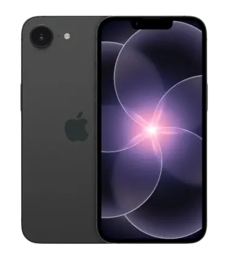
MacBook och iPad:
MacBook Neo
MacBook Neo är Apples billigaste bärbara dator någonsin och riktar sig till studenter och vardagsanvändare som vill ha Mac-upplevelsen till ett överraskande lågt pris. Det är också den första Mac-datorn som drivs av ett A-seriens chip "A18 Pro", alltså samma chip som finns i iPhone 16 Pro. Den kommer i fyra livliga färger och erbjuder upp till 16 timmars batteritid samt full kompatibilitet med macOS och Apple Intelligence.
Funktioner:
- A18 Pro-chip med 6-kärnig CPU och 5-kärnig GPU samt 16-kärnig Neural Engine.
- 13″ Liquid Retina-skärm med 2 408 × 1 506 pixlars upplösning och 500 nits ljusstyrka.
- 8 GB unified memory och 256 GB lagring i basmodellen (512 GB-modell med Touch ID tillgänglig).
- Upp till 16 timmars batteritid vid webbanvändning.
- Hållbart aluminiumhölje i återvunnet material, tillgänglig i färgerna "Silver", "Blush", "Citrus" och "Indigo".
- Två USB-C-portar (en USB 3, en USB 2) samt hörlursuttag. Wi-Fi 6E och Bluetooth 6.
- Fullt stöd för macOS Tahoe och Apple Intelligence.
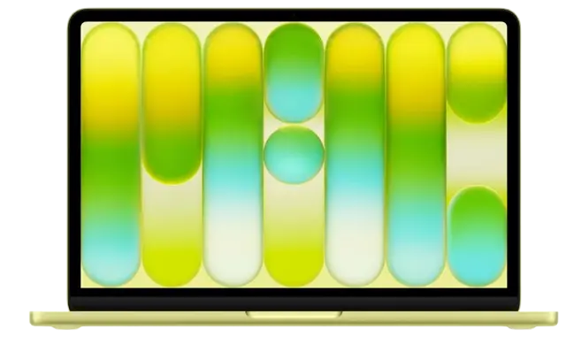
MacBook Pro (M5 Pro och M5 Max)
MacBook Pro 2026 levereras med Apples kraftfullaste chip hittills - M5 Pro och M5 Max - med en helt ny Fusion Architecture som kombinerar CPU och GPU i separata block för maximal prestanda. Den riktar sig till professionella användare inom videoredigering, 3D-rendering, mjukvaruutveckling och andra krävande arbetsflöden. Nytt för denna generation är bland annat Wi-Fi 7 via Apples egenutvecklade N1-chip, Thunderbolt 5 och SSD-hastigheter upp till 14,5 GB/s.
Funktioner:
- M5 Pro- eller M5 Max-chip med upp till 18-kärnig CPU och upp till 40-kärnig GPU.
- 14,2″ eller 16,2″ Liquid Retina XDR-skärm med ProMotion (upp till 120 Hz) och upp till 1 000 nits SDR-ljusstyrka.
- Lagring startar på 1 TB (M5 Pro) respektive 2 TB (M5 Max); upp till 8 TB tillgängligt.
- Upp till 128 GB unified memory med 614 GB/s minnesbandbredd (M5 Max).
- Wi-Fi 7 och Bluetooth 6 via Apples N1-chip. Tre Thunderbolt 5-portar, HDMI och SD-kortläsare.
- Batteritid upp till 24 timmars videoströmning.

MacBook Air (M5)
MacBook Air 2026 uppgraderas till Apples M5-chip och är fortfarande den tunnaste och lättaste Mac-datorn i sortimentet. Den kombinerar kraftfull prestanda, upp till 18 timmars batteritid och en snygg design - perfekt för studenter, kreatörer och alla som behöver en pålitlig och portabel dator till vardags. Baslagringen fördubblas till 512 GB jämfört med föregångaren, utan att priset höjs.
Funktioner:
- M5-chip med 10-kärnig CPU, upp till 10-kärnig GPU och Neural Accelerator i varje kärna.
- 13,6″ eller 15,3″ Liquid Retina-skärm med True Tone och stöd för 1 miljard färger.
- Lagring startar på 512 GB (upp till 4 TB konfigurerbart).
- Upp till 18 timmars batteritid; stöd för två externa skärmar.
- Magic Keyboard med Touch ID och stor Multi-Touch-styrplatta.
- Tillgänglig i Sky Blue, Midnight, Starlight och Silver. Wi-Fi 7 och Bluetooth 6.
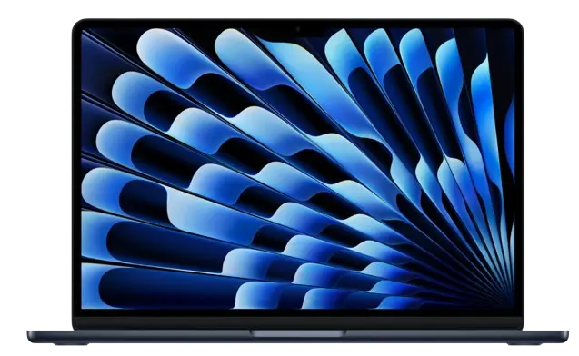
iPad Air (M4)
iPad Air 2026 uppgraderas till Apples M4-chip. Minnet ökas från 8 GB till 12 GB, vilket ger smidigare multitasking och bättre förutsättningar för Apples AI-funktioner. Designen och startpriset är oförändrade, vilket gör den till ett utmärkt val för den som vill ha kraftfull prestanda i ett lätt och tunt format.
Funktioner:
- M4-chip med 8-kärnig CPU, 9-kärnig GPU och 16-kärnig Neural Engine - upp till 30 % snabbare än M3-modellen.
- 11″ eller 13″ Liquid Retina-skärm med True Tone och P3 wide color.
- 12 GB unified memory (upp från 8 GB) med 120 GB/s minnesbandbredd.
- Lagring från 128 GB (upp till 1 TB), stöder Apple Pencil Pro och Magic Keyboard.
- Wi-Fi 7 och Bluetooth 6 via Apples N1-chip, cellulära modeller har C1X-modem.
- Tunn (6,1 mm) och lätt (~462 g för 11-tums Wi-Fi-modellen).
- Tillgänglig i "Space Gray", "Blue", "Purple" och "Starlight". Stöd för Apple Intelligence.
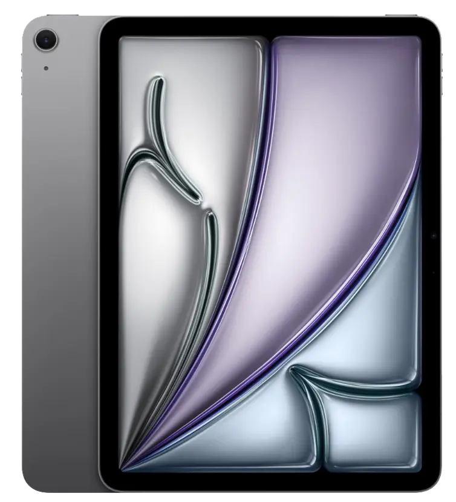
iPad (11th gen) (A16)
iPad 2026 är elfte generationens iPad och är Apples mest prisvärda surfplatta för vardagsbruk, studier och underhållning. Den drivs av A16 Bionic-chippet och erbjuder kraftfull prestanda till ett överkomligt pris. Med en 10,9-tums Liquid Retina-skärm, USB-C-anslutning och stöd för Apple Pencil (1:a generationen) är den perfekt för anteckningar, streaming och lättare produktivitetsuppgifter.
Funktioner:
- A16 Bionic-chip med 6-kärnig CPU, 5-kärnig GPU och 16-kärnig Neural Engine.
- 10,9″ Liquid Retina-skärm med 2 360 × 1 640 pixlars upplösning, True Tone och P3 wide color.
- 64 GB eller 256 GB lagring, 4 GB unified memory.
- 12 MP ultravidvinkelskamera på framsidan med Center Stage-stöd, 12 MP vidvinkelkamera på baksidan.
- Batteritid upp till 10 timmars webbanvändning eller videouppspelning.
- USB-C-anslutning, Wi-Fi 6 och Bluetooth 5.3, cellulära modeller med 5G-stöd.
- Stöd för Apple Pencil (1:a generationen) och Magic Keyboard Folio.
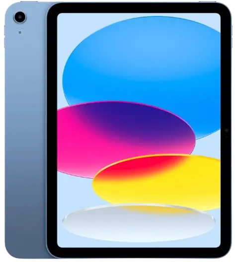
Tillbehör:
Studio Display XDR
Studio Display XDR är Apples mest avancerade skärm och ersätter den tidigare Pro Display XDR. Den har en 27-tums 5K Retina XDR-skärm med mini-LED-bakgrundsbelysning, upp till 2 000 nits peak HDR-ljusstyrka och 120 Hz uppdateringsfrekvens med Adaptive Sync. Den riktar sig till proffs inom HDR-videoredigering, 3D-rendering och diagnostisk radiologi, och levereras med ett höj- och sänkbart stativ som standard.
Funktioner:
- 27″ 5K Retina XDR-skärm (5 120 x 2 880 pixlar, 218 ppi) med mini-LED och 2 304 lokala dimmerzoner.
- Upp till 1 000 nits SDR-ljusstyrka och 2 000 nits peak HDR-ljusstyrka; 1 000 000:1 kontrastförhållande.
- 120 Hz uppdateringsfrekvens med Adaptive Sync (47-120 Hz variabelt).
- P3 och Adobe RGB wide color gamut med stöd för 1 miljard färger och True Tone.
- 12 MP Center Stage-kamera med stöd för Desk View; studio-mikrofoner och sex-högtalar-system med Spatial Audio.
- Två Thunderbolt 5-portar (upp till 140 W laddning) och två USB-C-portar.
- Höj- och sänkbart stativ ingår; nano-texture-glas tillgängligt som tillval.
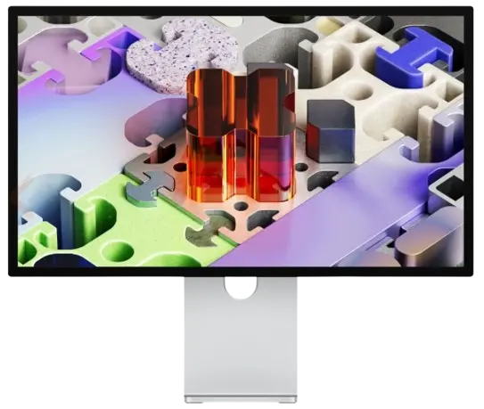
Studio Display
Nya Studio Display 2026 är en uppdatering av 2022 års original och passar användare som vill ha en professionell Apple-skärm utan Studio Display XDR:s premiumpris. Den har samma 27-tums 5K Retina-skärm som föregångaren men kompletteras nu med en uppgraderad 12 MP Center Stage-kamera med stöd för Desk View, kraftfull Thunderbolt 5-anslutning och ett förbättrat sexhögtalarsystem med 30 % djupare bas.
Funktioner:
- 27″ 5K Retina-skärm (5 120 x 2 880 pixlar, 218 ppi) med LCD-panel, 600 nits ljusstyrka och 60 Hz uppdateringsfrekvens.
- P3 wide color, True Tone och stöd för 1 miljard färger.
- 12 MP Center Stage-kamera med förbättrad bildkvalitet och stöd för Desk View.
- Studio-mikrofonarray med riktad strålformning och sex-högtalar-system med Spatial Audio.
- Två Thunderbolt 5-portar (upp till 96 W laddning) och två USB-C-portar.
- Höjdjusterbart stativ tillgängligt som tillval (+5 000 kr) och nano-texture-glas tillgängligt som tillval (+4 000 kr).
- Inkluderar Thunderbolt 5 Pro-kabel i förpackningen.
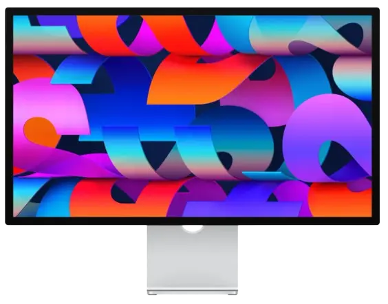
Apple-produkter 2025
iPhone 17-serien:
iPhone 17 Pro Max
iPhone 17 Pro Max är Apples största och mest avancerade iPhone 2025 med ett 6,9-tums skärmformat som är perfekt för innehållsskapare och användare som prioriterar maximal skärmyta. Den har samma professionella kamerauppsättning som iPhone 17 Pro med tre 48 MP-sensorer och upp till 8x optisk zoom, men erbjuder även längre batteritid och större displayområde. Unibody-höljet i varmpressat aluminium ger både premiumkänsla och hållbarhet.
Funktioner:
- 6,9″ Super Retina XDR OLED-skärm med ProMotion (120 Hz) och upplösningen 2 868 × 1 320 pixlar.
- A19 Pro-chip med ångkylning för hög kontinuerlig prestanda vid krävande arbetsflöden.
- Trippelkamerasystem: 48 MP Fusion huvudkamera + 48 MP ultra-vidvinkel + 48 MP telefoto med upp till 8x optisk zoom.
- Unibody-design i varmpressat aluminium, Ceramic Shield 2-front och IP68-klassad vattentålighet (6 m i 30 min).
- Batteritid upp till 35 timmars videouppspelning, 50 % laddning på ca 20 min med 20 W-adapter eller snabbare.
- Lagring från 256 GB (upp till 1 TB), iOS 26 och fullt stöd för Apple Intelligence.
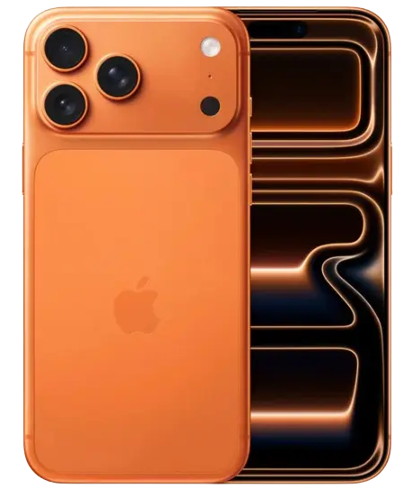
iPhone 17 Pro
Denna toppmodell från Apple erbjuder en proffsig kamerauppsättning med tre 48 MP-Fusion sensorer och en optisk zoom upp till 8x, vilket är något som hittills inte funnits i någon iPhone tidigare. Den har ett unibody-hölje i varmpressat aluminium vilket ger en hög tålighet. Tillsammans med det nya A19 Pro-chippet och stöd för avancerade arbetsflöden riktar den sig till både innehållsskapare och krävande användare.
Funktioner:
- 6,3″ Super Retina XDR OLED-skärm med upplösningen 2 622 × 1 206 pixlar.
- A19 Pro-chip med ångkylning och hög kontinuerlig prestanda.
- Trippelkamerasystem: 48 MP huvud + ultra-vidvinkel + telefoto med upp till 8x optisk zoom.
- Unibody-design i varmpressat aluminium, Ceramic Shield 2-front och IP68-klassad vattentålighet.
- Batteritid upp till 31 timmars videouppspelning, 50 % på ca 20 min snabbladdning.
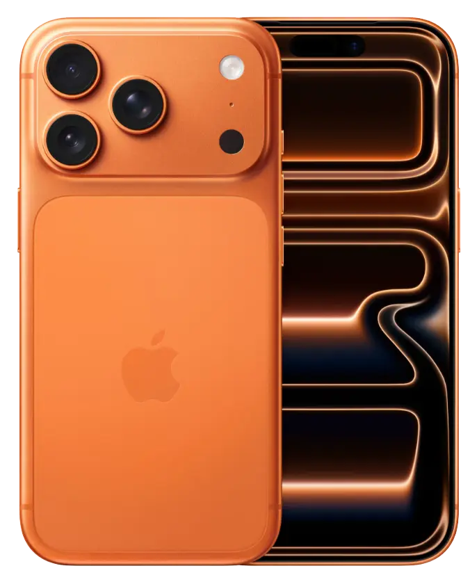
iPhone 17
Denna modell erbjuder en uppgraderad kärnteknik från föregångaren, bland annat chippet A19 och en 6,3″ 120 Hz ProMotion-skärm. Kamerauppsättningen består av två 48 MP kameror vilket gör den till ett väldigt bra val för den som vill ha mycket iPhone-kvalitet utan Pro-priset.
Funktioner:
- 6,3″ OLED-skärm med ProMotion (120 Hz).
- A19-chip med neurala acceleratorer.
- Dubbelkamera: 48 MP huvudkamera + 48 MP ultra-vidvinkel.
- Snabbladdning - 50 % på ca 20 min.
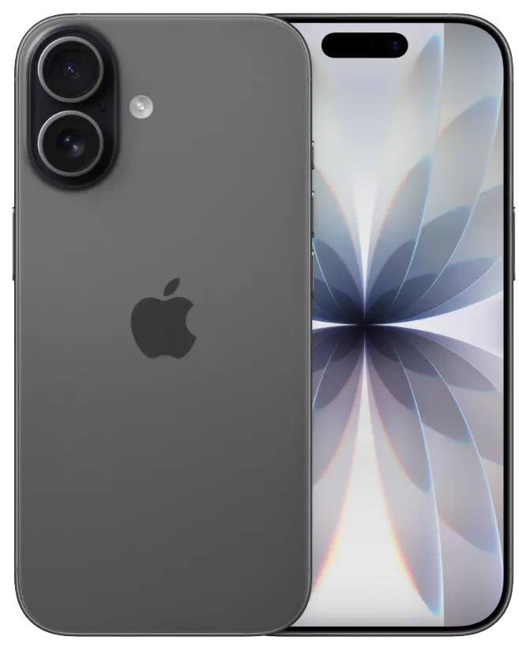
iPhone Air
En ny sorts iPhone-kategori för Apple - mycket tunnare och lättare än tidigare modeller, med titanram och Ceramic Shield-glas, samtidigt som den delar mycket av den kraftfulla tekniken från Pro-modellerna.
Funktioner:
- Titanram, tunn profil (5,6 mm) och vikt ca 165 g.
- 6,5″ Super Retina XDR OLED-skärm med 120 Hz.
- A19 Pro-chip, energieffektiv prestanda.
- 48 MP huvudkamera, Center Stage-selfiekamera.
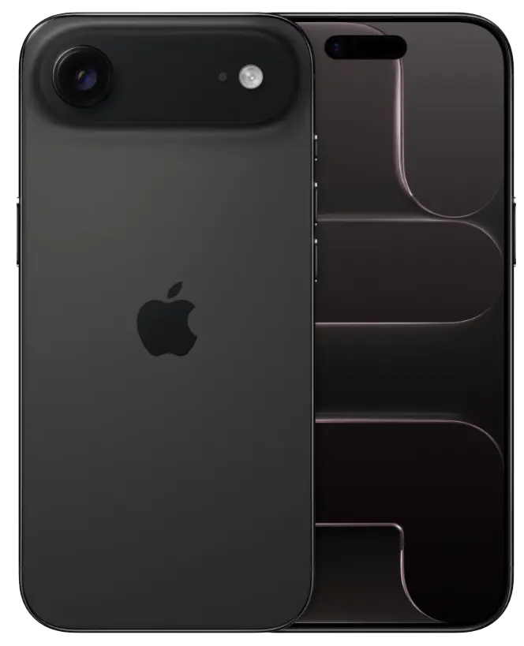
MacBook och iPad:
MacBook Pro (M5)
MacBook Pro 2025 med M5-chip är en kraftfull bärbar dator som riktar sig till professionella användare som behöver hög prestanda för videoredigering, kodning och kreativt arbete, men inte kräver den absolut högsta prestandan från M5 Pro/Max-chipsen. Den erbjuder utmärkt batteritid, en strålande Liquid Retina XDR-skärm och Thunderbolt 5-anslutningar i ett kompakt format.
Funktioner:
- M5-chip med 10-kärnig CPU, upp till 10-kärnig GPU och Neural Accelerator i varje kärna.
- 14,2″ Liquid Retina XDR-skärm med ProMotion (upp till 120 Hz) och upp till 1 000 nits SDR-ljusstyrka.
- Lagring startar på 512 GB (upp till 2 TB konfigurerbart), upp till 32 GB unified memory.
- Batteritid upp till 22 timmars videoströmning.
- Tre Thunderbolt 5-portar, HDMI 2.1 och SD-kortläsare.
- Wi-Fi 7 och Bluetooth 6.
- Magic Keyboard med Touch ID och stor styrplatta med Force Touch.
- Tillgänglig i Space Gray och Silver.
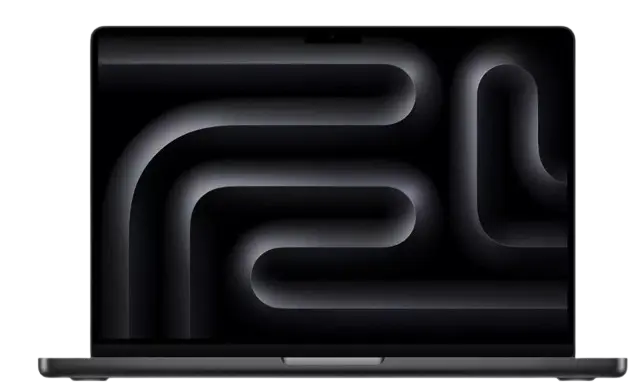
MacBook Air (M4)
Den nya MacBook Air med M4-chip är världens mest sålda bärbara dator och levererar kraftfull prestanda i ett tunt och lätt format. Med upp till 18 timmars batteritid och en ny 12 MP Center Stage-kamera är den ett utmärkt val för studier, webbutveckling och kreativt arbete.
Funktioner:
- 13,6″ Liquid Retina-skärm med IPS-teknik och 2 560 × 1 664 pixlars upplösning vid 224 ppi.
- M4-chip med 10-kärnig CPU, upp till 10-kärnig GPU och stöd för upp till 32 GB unified memory.
- Upp till 18 timmars batteritid; stöd för upp till två externa skärmar utöver den inbyggda.
- Lagring från 256 GB (upp till 2 TB konfigurerbart); RAM startar på 16 GB.
- Magic Keyboard med Touch ID, MagSafe 3-laddning och två Thunderbolt 4/USB 4-portar. Wi-Fi 6E och Bluetooth 5.3.
- Tillgänglig i färgerna "Sky Blue", "Midnight", "Starlight" och "Silver".
- Vikt 1,24 kg.
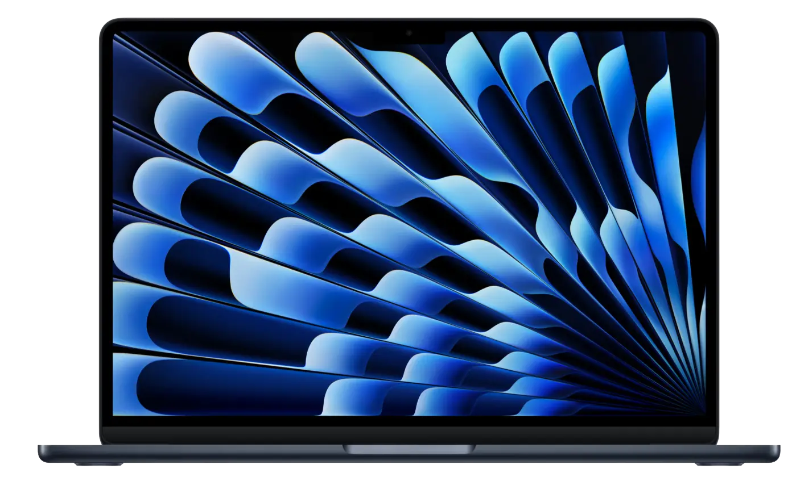
iPad Pro (M5)
iPad Pro 2025 med M5-chip är Apples kraftfullaste surfplatta och riktar sig till professionella användare inom design, videoredigering, 3D-modellering och andra krävande arbetsflöden. Den har en revolutionerande OLED-skärm med Tandem OLED-teknik som ger exceptionell ljusstyrka och kontrast, samtidigt som den är otroligt tunn och lätt. Med stöd för Apple Pencil Pro och Magic Keyboard blir den ett komplett arbetsverktyg.
Funktioner:
- M5-chip med 10-kärnig CPU, upp till 10-kärnig GPU och Neural Accelerator i varje kärna.
- 11″ eller 13″ Ultra Retina XDR OLED-skärm med Tandem OLED-teknik, ProMotion (120 Hz), upp till 1 600 nits peak HDR-ljusstyrka.
- Lagring från 256 GB (upp till 2 TB), upp till 16 GB unified memory.
- Batteritid upp till 10 timmars webbanvändning eller videouppspelning.
- Fyra studiokvalitetsmikrofoner och fyra högtalarsystem med stöd för Spatial Audio.
- Thunderbolt 5/USB 4-anslutning, Wi-Fi 7 och Bluetooth 6. Cellulära modeller med 5G-stöd.
- Tunn design (5,1 mm för 13-tums modellen), stöd för Apple Pencil Pro och Magic Keyboard.
- Tillgänglig i Space Gray och Silver.
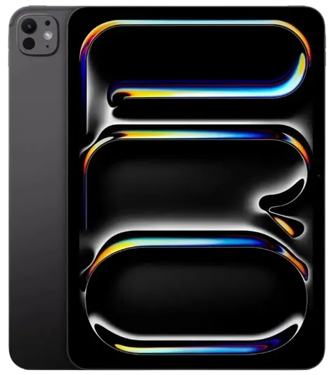
iPad Air (M3)
iPad Air M3 är sjunde generationens iPad Air och efterträder iPad Air med M2-chip. Den passar utmärkt för studier, design och kreativt arbete tack vare sin tunna design och kraftfulla prestanda.
Funktioner:
- 11″ Liquid Retina-skärm med IPS-teknik och 2 360 × 1 640 pixlars upplösning; 60 Hz uppdateringsfrekvens, True Tone och P3 wide color.
- M3-chip med 8-kärnig CPU, 9-kärnig GPU och 16-kärnig Neural Engine med stöd för hårdvaruaccelererad ray tracing.
- 8 GB unified memory; lagring från 128 GB (upp till 1 TB).
- Batteritid upp till 10 timmars webbanvändning eller videouppspelning.
- Stöd för Apple Pencil Pro och ny Magic Keyboard med funktionsrad och större styrplatta.
- Tunn (6,1 mm) och lätt (~462 g för 11-tums Wi-Fi-modellen). Stöd för Apple Intelligence.

Tillbehör:
Apple Watch Series Ultra 3
Apple Watch Series Ultra 3 är Apples mest avancerade och robusta smartklocka, designad för extrema förhållanden och utomhusäventyr. Den har ett 49 mm titanium-hölje, safirkristall över skärmen och är certifierad enligt MIL-STD 810H för tålighet mot extrema temperaturer, stötar och höjder. Med avancerade GPS-funktioner, dykarläge upp till 100 m och upp till 36 timmars batteritid passar den perfekt för bergsklättrare, dykare och ultramaratonlöpare.
Funktioner:
- 49 mm titanium-hölje med safirkristall och keramisk baksida, Action Button för snabb åtkomst till träning och funktioner.
- Always-On Retina-skärm med upp till 3 000 nits ljusstyrka - den klaraste Apple Watch-skärmen någonsin.
- S10-chip med 64-bitars dual-core processor och 4-kärnig Neural Engine.
- Batteritid upp till 36 timmars normal användning; upp till 72 timmar i lågströmläge.
- Precision dual-frequency GPS (L1 och L5) för extrem noggrannhet i utmanande terräng.
- Dykdator-certifierad upp till 100 m enligt EN13319; djupmätare och vattentemperatursensor.
- WR100-vattentålighet, IP6X-dammtålig och MIL-STD 810H-certifierad.
- Siren på 86 decibel för nödsituationer, cellulär anslutning och 5G-stöd.
- EKG-applikation, syremätning, hypertensionsnotiser, sömnanalys och kroppstempersensor.
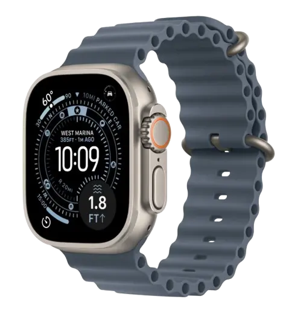
Apple Watch Series 11
Apple Watch Series 11 har ett S10-chip med 4-kärnig Neural Engine och introducerar nya hälsofunktioner som Sleep Score och hypertensionsnotiser. Batteritiden har förlängts till upp till 24 timmars normal användning och med bara 15 minuters laddning får du upp till 8 timmars användning. Den passar perfekt för den som vill ha en fullutrustad smartklocka med fokus på hälsa och träning.
Funktioner:
- Always-On Retina-skärm med upp till 2 000 nits ljusstyrka.
- Batteritid upp till 24 timmars normal användning; upp till 8 timmars användning efter 15 minuters laddning.
- EKG-app, syremätning, hypertensionsnotiser och sömnanalys med Sleep Score (0-100).
- Vattentålig till 50 m enligt ISO-standard 22810:2010 (WR50) samt IP6X-dammtålig.
- 5G-stöd, Ion-X-glas som är 2 gånger mer reptåligt än Series 10, samt djupmätare upp till 6 m.
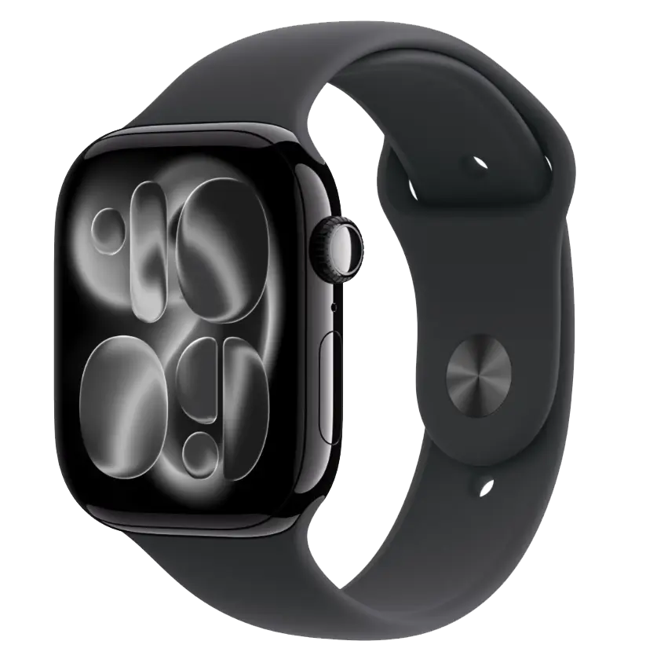
AirPods Pro 3
AirPods Pro 3 är tredje generationens in-ear-hörlurar från Apple och fokuserar på förbättrad ljudkvalitet, kraftigare brusreducering och längre batteritid per laddning. För första gången kan AirPods Pro 3 mäta hjärtfrekvens och spåra över 50 träningstyper via Fitness-appen på iPhone.
Funktioner:
- Upp till 8 timmars lyssning per laddning med ANC aktiverat; upp till 7,5 timmar med Personalized Spatial Audio och dynamisk huvudspårning.
- Totalt upp till 24 timmars lyssning inklusive laddningsfodralet med ANC aktiverat.
- Upp till 10 timmars lyssning i transparensläge.
- Inbyggd hjärtfrekvenssensor med infraröd PPG-teknik för träningsspårning direkt i Fitness-appen.
- IP57-klassad mot svett och vatten; ny design baserad på analys av över 10 000 3D-öronskanner med fem öronstyckesstorlekar inklusive ett nytt XXS-alternativ.
- Rumsligt ljud med dynamisk huvudspårning, adaptiv EQ och MagSafe/USB-C-laddning.
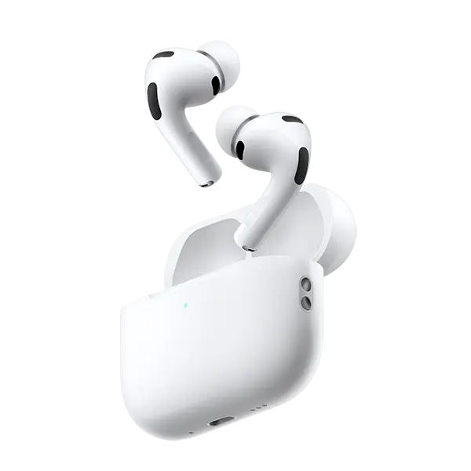